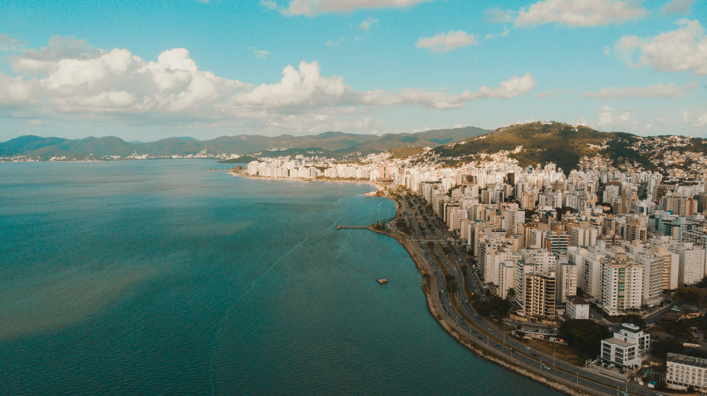

Os primeiros habitantes da região foram os índios tupi-guaranis, que viviam da pesca, agricultura e coleta de moluscos. Existem vestígios dessa presença em sambaquis com milhares de anos.
A colonização começou por volta de 1675, com Francisco Dias Velho, que fundou Nossa Senhora do Desterro. A região também teve ocupação no continente e na ilha, com expansão do povoamento.
No século XVIII, a ilha ganhou importância estratégica e passou a ter fortificações militares, além do desenvolvimento da agricultura, pesca e produção artesanal.
No século XIX, Desterro virou cidade e capital de Santa Catarina, crescendo com obras públicas e desenvolvimento urbano.
Em 1894, após conflitos da República, a cidade passou a se chamar Florianópolis, em homenagem a Floriano Peixoto.
Saiba mais

Florianópolis é conhecida como “Ilha da Magia” devido às suas belezas naturais, como praias, trilhas, montanhas, cachoeiras e parques, e também por suas lendas e histórias populares.
Essas lendas fazem parte da cultura local e foram muito influenciadas pelos colonizadores açorianos, sendo transmitidas de geração em geração pelos moradores da ilha. Entre as histórias mais conhecidas estão relatos de bruxas, fantasmas, lobisomens e amores proibidos, que ajudaram a criar o clima misterioso da cidade.
As bruxas são as figuras mais famosas dessas histórias e estão diretamente ligadas ao apelido da ilha. Uma das lendas conta que elas faziam festas na região da Praia do Itaguaçu, na parte continental de Florianópolis. Nessas festas, participavam seres como lobisomens e outros personagens do imaginário popular.
Segundo a lenda, por não terem convidado o diabo, as bruxas foram punidas e transformadas em pedras. Até hoje, algumas formações rochosas na praia são associadas a essas bruxas petrificadas.
Assim, a mistura entre natureza exuberante e lendas antigas fez surgir o nome “Ilha da Magia”, que representa tanto a beleza quanto o mistério de Florianópolis. Saiba mais